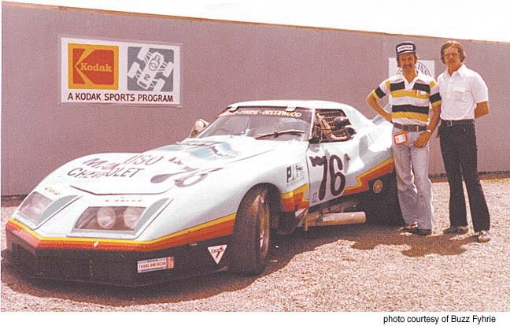

An automotive family
since 1923.
Le Mans, June 1976 — the Greenwood Corvette Rick Mancuso turned over to his teammates. He stayed home to run the business.
Le Mans, June 1976 — the Greenwood Corvette Rick Mancuso turned over to his teammates. He stayed home to run the business.
1923 — 1953
Benjamin Mancuso founds the family's automobile business in Batavia, New York, in 1923. In 1953 Jim Mancuso establishes Mancuso Chevrolet in Skokie, Illinois.

Letterhead · 4700 Golf Rd., Skokie

“OK Used Cars” · date and place not recorded

Yenko “Deuce” · Mancuso Chevrolet, dealer

Mancuso Chevrolet #76. By the Revell kit's account, the first “customer” car John Greenwood built — for Rick Mancuso. Circuit and date not recorded.
1972 — 1976
Rick Mancuso took the green flag in 1972, in a 1958 Corvette, B-Production. By 1976 the dealership's own Corvette had a crew.

Photo courtesy of Bob Brandle & Tony Mezzacca

Photo courtesy of Buzz Fyhrie

Photo courtesy of Buzz Fyhrie

Photo courtesy of Buzz Fyhrie
Jim Mancuso, to his son Rob
“You're no longer just a car guy, you're a Mancuso, and I'm proud of you.”
Ward's Dealer Business, March 2001 Pending client approval
June 1976 · Le Mans
For America's bicentennial, the French government invited Mancuso and his team to race a Corvette at Le Mans. Rick stayed home to run the business; his teammates drove.

Le Maine Libre · 12–13 June 1976

Drivers' names on the glass · Mancuso Chevrolet on the rear quarter · Photo courtesy of Albert Lamberts
The episode continues →